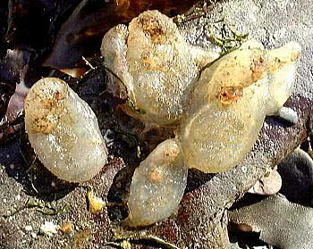

Group of Clavelina lepadiformis individuals, sometimes called the Light-bulb Sea Squirt
These are sessile organisms. They all have a similar way of life but are varied in size, shape and colour. Essentially they are a bag containing intestines and gills with two openings, siphons, through which water is drawn or expelled. Clavellina is transparent and the inside can be seen quite clearly. It has several coloured lines of yellow or orange. This species is also found in small groups. The name Sea Squirt reflects the fact that upon picking them up they contract and invariably squirt water out of the siphons.
What makes the Sea Squirts particularly fascinating is the fact that they are a sub-phylum of the Chordates containing fish and mammals. The link is in the presence of a notochord but they lack the backbone. Looking at the sessile adult "bag" on a shore it is difficult to see the link but the larvae are more like tadpoles. They have a muscular tail for swimming and use the notochord for support. When they land on the beach they settle head first on to the substrate then metamorphose into the adult, by absorbing the tail. The larva is mobile and chordate-like. Sea squirts have two siphons: the top one draws water in by the action of cilia beating to produce a current of water. The lower siphon takes water out. From this stream oxygen is extracted by the gills. Plankton is filtered from the water and passed to the mouth. In estuaries where the water has fine particles of organic matter (detritus) suspended in it, this is consumed. They are hermaphrodite, having both male and female organs. The sperm and eggs are released through the siphons.

Sea Squirts can be very abundant in the lower shore, attached to rocks and piers. Some of the European species have invaded from abroad: as they are sessile and attach to hard substrates some have arrived on the undersides of boats. There are Styela species from Korea living in Southampton Water, England. The colour of Styela is brown with pieces of seaweed growing on the outside. Sea Squirts are a very widespread group in European Waters.
There are some which form tiny colonies stuck to rock and seaweed, e.g. Aplidium. Here the individuals or zooids are embedded together in a test. Aplidium has a stalk to this test and project the zooids out into the water.

Aplidium photographed in a rockpool on an exposed shore. The individual zooids are visible. There are also some tiny colonies that form star-like groups of zooids called the Star Ascidians. these are dealt with on a separate page. See the Star Ascidians
Looking for a next step?
The FSC offers a range of publications, courses for schools and colleges and courses for adults, families and professionals that relate to the seashore environment. Why not find
out more about the FSC?

FEEDBACK
Do you have any questions?
Copyright © 2008 Field Studies Council

Creative Commons Attribution-Noncommercial-No Derivative Works 3.0 Licence .
Site Statistics by Opentracker
{kind=link}